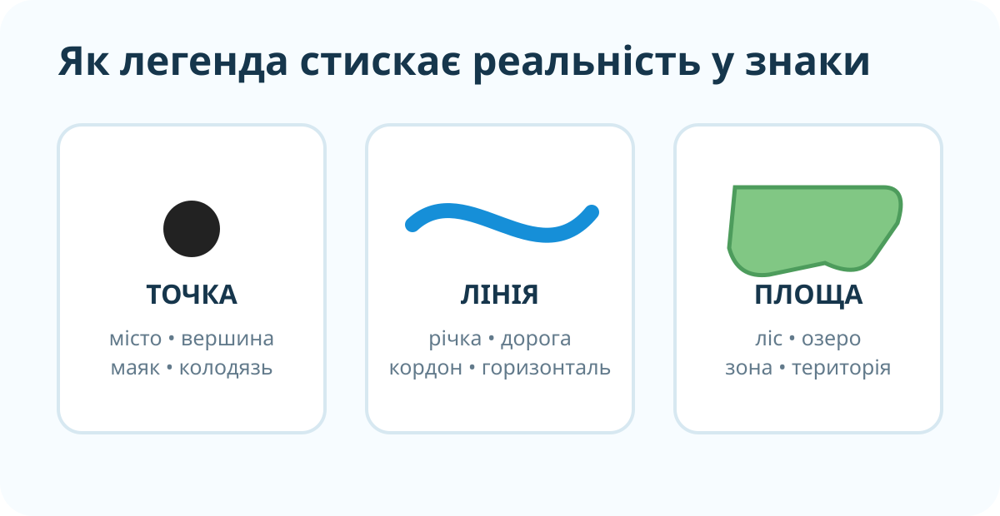

Фізична основа світу
Таке зображення дає загальне просторове уявлення про материки, океани, рельєф і великі природні об’єкти.
NASA Earth Observatory / Blue Marble, глобальна фізична основа.
Сьогодні карта — не ілюстрація, а система доказів. Ви навчитеся визначати тип карти за її змістом, читати легенду й доводити висновок конкретними картографічними ознаками.
Уявіть дві карти. На першій одночасно видно річки, міста, кордони, рельєф і дороги. На другій майже весь зміст підпорядкований одному явищу — наприклад, густоті населення.

Локальна схема: три базові способи передавання просторових об’єктів у легенді.
Таке зображення дає загальне просторове уявлення про материки, океани, рельєф і великі природні об’єкти.
NASA Earth Observatory / Blue Marble, глобальна фізична основа.

Кольори тут кодують значення одного показника. Без легенди неможливо коректно сказати, що саме означає темніший або світліший тон.
Тематична карта густоти населення світу, Wikimedia Commons.
Уявіть, що Вам потрібно відповісти на три запитання: як дістатися до міста, де густіше живуть люди і в якій країні тепліше? Одна карта не вміє відповідати на всі запитання одночасно. Тому географи добирають карту під завдання, а не під колір, який їм сподобався.
Запоріжжя: знайдіть Дніпро, місто, дороги й площинні об’єкти. Порівняйте їхні умовні знаки.
Читання легенди: лінії доріг і річок — різні за оформленням; назви й спеціальні значки позначають об’єкти; заливки показують території. Це карта для орієнтування, а не карта густоти населення.
Відкрити карту OpenStreetMap повністю ↗Завдання. За легендою знайдіть одиницю вимірювання. Порівняйте Бангладеш і Монголію: яка країна має вищу густоту? Не плутайте густоту із загальною чисельністю населення.
Джерело: Our World in Data (HYDE / Gapminder / ООН / FAO), показник осіб на 1 км² площі суходолу, дані/оцінки за 2025 рік. Картограма за країнами не показує розподілу населення всередині кожної країни.
Відкрити тематичну карту густоти ↗Завдання. Порівняйте Україну й Єгипет. Які величини позначає колірна шкала? Чому за цим показником не можна встановити, у якій країні сьогодні дощитиме?
Джерело: Our World in Data / Copernicus Climate Change Service; середня річна температура повітря на висоті 2 м, °C, 2025 рік. Це усереднення, а не поточна погода в конкретному місті.
Відкрити температурну карту ↗Завдання. Знайдіть ділянку, де горизонталі розміщені щільніше. Що це говорить про крутість схилу? Назвіть одне обмеження, яке має карта такого масштабу.
OpenTopoMap: топографічна карта на основі відкритих геоданих. Якщо сервер не дозволяє вбудовування, відкрийте її в новій вкладці.
Відкрити топографічну карту Карпат ↗Оберіть життєву ситуацію та карту, без якої завдання не розв’язати. Після вибору прочитайте пояснення — відповідь має спиратися на зміст та легенду.
Карти завантажуються через інтернет із сайтів постачальників. Якщо вбудовування блокується налаштуваннями браузера або мережі, скористайтеся прямими посиланнями під кожною картою. Для уроку достатньо дослідити карти А, Б і В; карта Г — для поглиблення.
Карта стискає реальність у систему знаків. Щоб її читати, треба розшифрувати три типи об’єктів.
Оберіть, що найімовірніше позначає кожен символ:
Є умовна шкала показника: 0–20, 21–50, 51–100, понад 100. Територія А має 18 одиниць, Б — 76, В — 143.
OpenStreetMap. Тут одночасно подано дороги, населені пункти, води, межі, об’єкти інфраструктури — типовий комплексний зміст.
Перегляньте фрагмент 03:22–05:35: види умовних знаків та легенда карти. Запишіть дві ознаки, які дозволяють визначити, що саме позначає колір.
Відкрити відео українською ↗Джерело: український освітній канал «Географія ПРОСТО», урок для 6 класу.
Перегляньте перші 3 хвилини. Потім поверніться до карт густоти населення й температури: де саме розташована шкала, що вона вимірює та чому для цих двох карт її не можна читати однаково?
Відкрити відео українською ↗Джерело: Тетяна Ющишина, «Урок 11. Як легенда карти допомагає отримати нам інформацію. 6 клас. НУШ».
Відео не запускаються автоматично. Якщо вбудований програвач не працює, використайте пряме посилання.
Назва карти формулює, що саме показано. Легенда пояснює символи, кольори, лінії, штрихування й шкали. Масштаб визначає рівень деталізації. Разом ці елементи дозволяють не просто «дивитися» на карту, а читати її як модель даних.
Проблема: чи можна визначити тип карти лише за кількістю кольорів?
Відео українською перед тестом (обов’язкове): «Географічні карти, їх елементи. Легенда карти» — 03:22–05:35 ↗.
§12. Відкрийте електронний підручник і знайдіть у параграфі одну загальногеографічну та одну тематичну карту. Для кожної випишіть назву й 3 елементи легенди.
Запотоцький С.П. та ін. Географія, 6 клас, 2023.